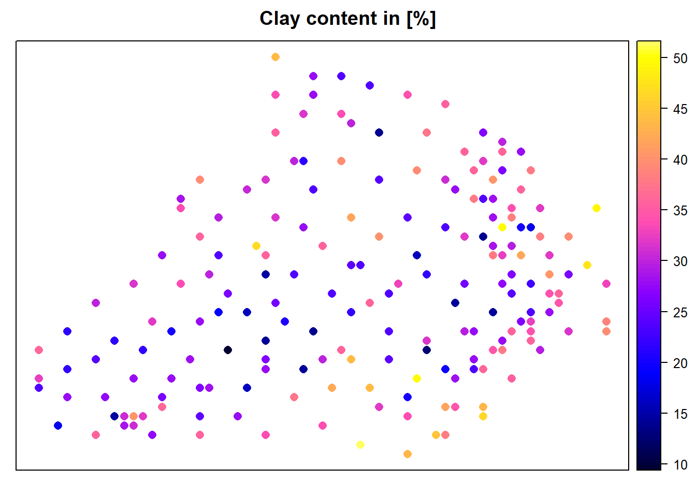
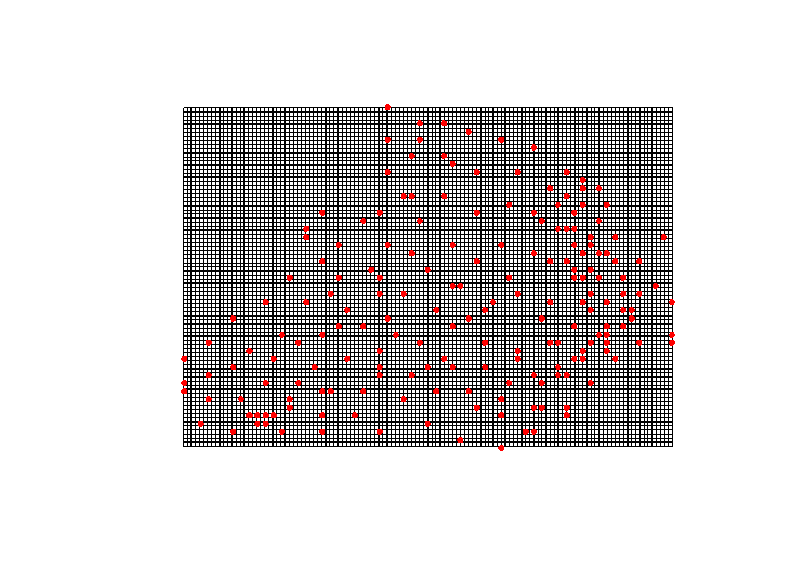
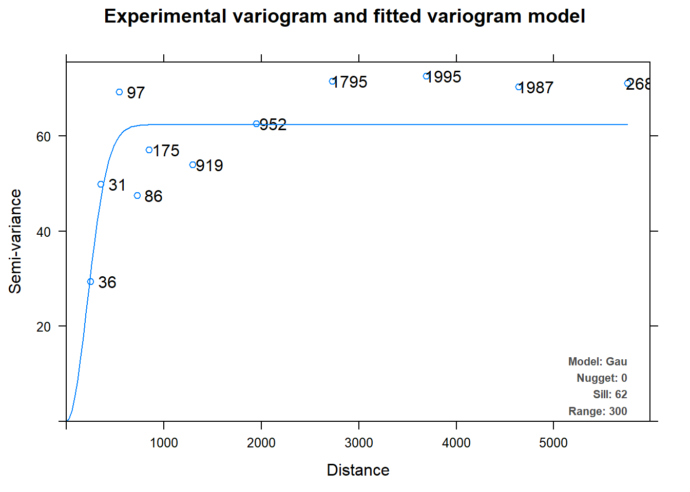
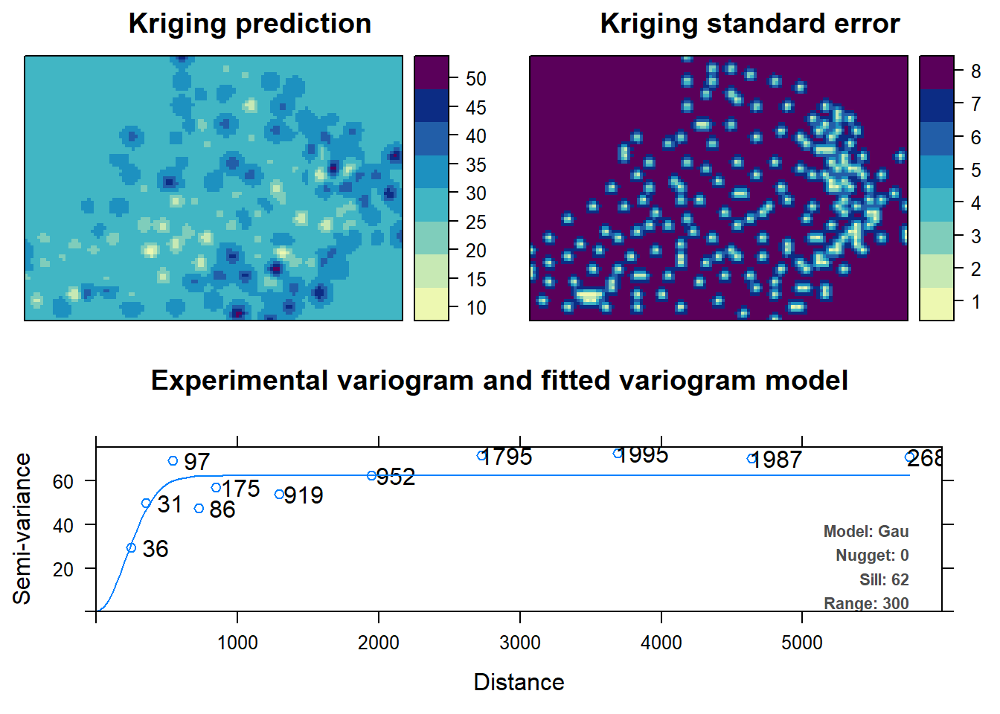

Thus far, we have made predictions with a kriging technique that assumes that the variogram model, fitted from sample data, is known a priori before kriging or simulation: any uncertainty about it is ignored. Diggle et al. (1998) proposed an approach, based on linear mixed and generalized linear mixed models, to provide what is termed as model-based geostatistical predictions. It incorporates the estimation error of the variogram coefficients.
Uncertainty of the variogram an important in some cases like:
Normally geoR and automap packages are used to aid automatic determination of variogram parameters (model-based geostatistical analysis) in R.
We start with automap package that is based on gstat.
rm(list=ls(all=TRUE))
unlink(".RData")
if (!require("pacman")) install.packages("pacman")
pacman::p_load(automap)Get the data.
library(rgdal)
d <- readOGR("soil_data_CIAT.shp", stringsAsFactors = FALSE)## OGR data source with driver: ESRI Shapefile
## Source: "D:\JKUAT\ShortCourses\Geostatistics\intro2geostats\soil_data_CIAT.shp", layer: "soil_data_CIAT"
## with 200 features
## It has 7 fields
## Integer64 fields read as strings: X Yd <- remove.duplicates(d)Create a prediction grid for the our data.
d.grid <-as.data.frame(spsample(d, type = 'regular', n = 10000))
names(d.grid) <- c("X", "Y")
coordinates(d.grid) <- c("X", "Y")
gridded(d.grid) <- TRUE # Create SpatialPixel object
fullgrid(d.grid) <- TRUE # Create SpatialGrid object
# Add data's projection information to the empty grid
library(raster)
crs(d.grid) <- crs(d)Display Clay content and the grid with points.
spplot(d,"Clay",colorkey=TRUE, main="Clay content in [%]")
plot(d.grid)
points(d, pch=20, col="red")
Let us automatically fit variogram using autofit function in automap package.
c.v <- autofitVariogram(Clay~1, d)
summary(c.v)## Experimental variogram:
## np dist gamma dir.hor dir.ver id
## 1 36 250.0000 29.42281 0 0 var1
## 2 31 353.5534 49.80763 0 0 var1
## 3 97 543.1980 69.21790 0 0 var1
## 4 86 725.0621 47.44695 0 0 var1
## 5 175 850.7280 57.05185 0 0 var1
## 6 919 1297.7331 53.96572 0 0 var1
## 7 952 1948.8853 62.51598 0 0 var1
## 8 1795 2728.1925 71.54363 0 0 var1
## 9 1995 3690.6582 72.58655 0 0 var1
## 10 1987 4641.4518 70.27130 0 0 var1
## 11 2685 5757.7100 71.04165 0 0 var1
##
## Fitted variogram model:
## model psill range
## 1 Nug 0.00000 0.0000
## 2 Gau 62.31814 300.3173
## Sums of squares betw. var. model and sample var.[1] 0.1602768We observe that variogram parameters (sill, range and nugget) have been determined automatically, unlike in the previous section.
Let us plot the experimental variogram.
plot(c.v)
We can see that the automap package is quite handy as it automatically determines variogram parameters and plots the variogram and tells you how many point pairs there are at each distance via plot and summary functions respectively. Not only can we autofit variograms, but we can autokrige surfaces as well. The following gives us the nice autofitted variogram from, as well as interpolated Clay content within grid area.
c.krig <- autoKrige(Clay~1, d, d.grid)## [using ordinary kriging]plot(c.krig)
You can observe that standard error of the interpolated values is lower in regions within the grid where there are more data points. However, it is higher outside the borders of the data points because of extrapolation.